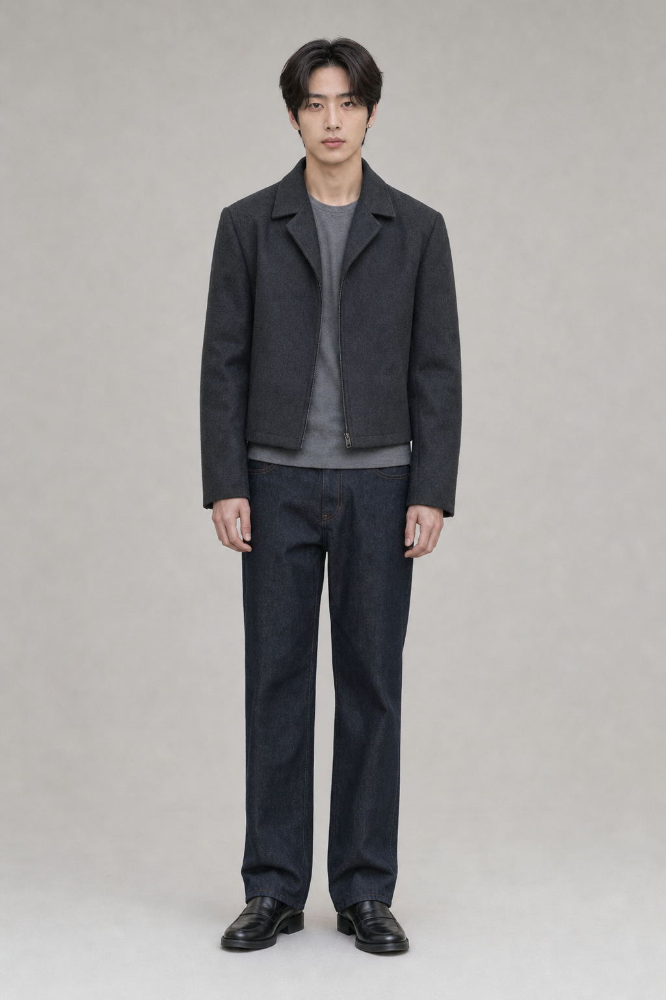
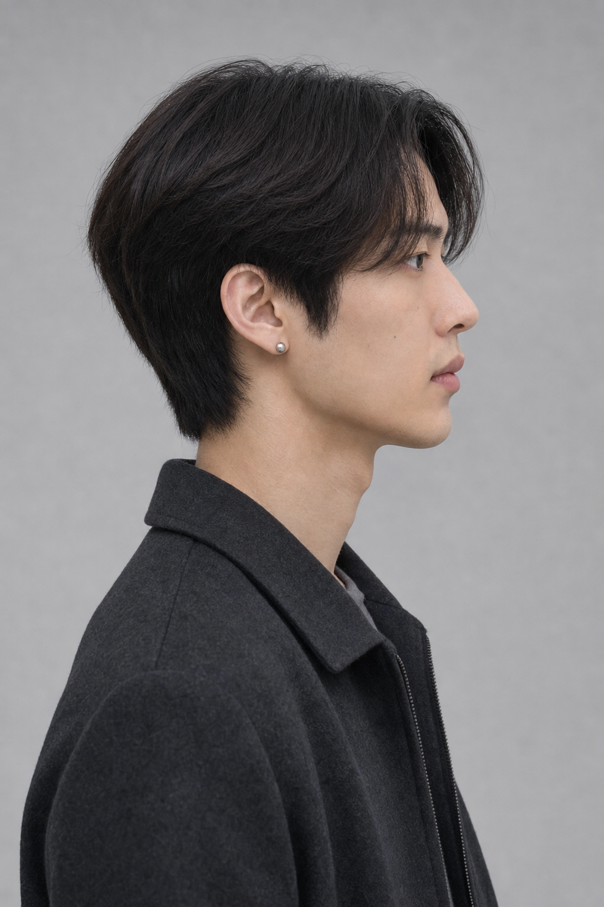

9:41
내 분석

전신
정면

측면
11월 23일 촬영 · 자연광 · 밝기 적정
밝은 웜 베이지 피부와
긴 타원형 얼굴이에요
노란기가 살짝 도는 밝고 맑은 피부예요.
상체가 짧고 다리가 긴 편이라 짧은 상의가 잘 어울려요.
피부색
얼굴 세 곳에서 추출
이마
볼
턱선
관찰한 특징
피부 톤
노란기 우세 · 맑은 결
얼굴형
긴 타원형 · 곧은 턱선
이목구비
곧은 눈썹 · 또렷한 눈매
헤어
가르마를 살린 미디엄 레이어
전신 비율
상체가 짧고 다리가 긴 편
코디
차콜 재킷 · 스트레이트 데님
액세서리
작은 실버 이어링
퍼스널컬러 보기
추구미 찾기
내 분석
퍼스널컬러
추구미
내 기록